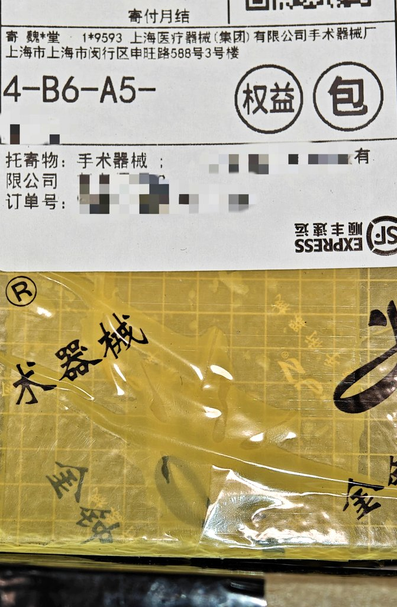
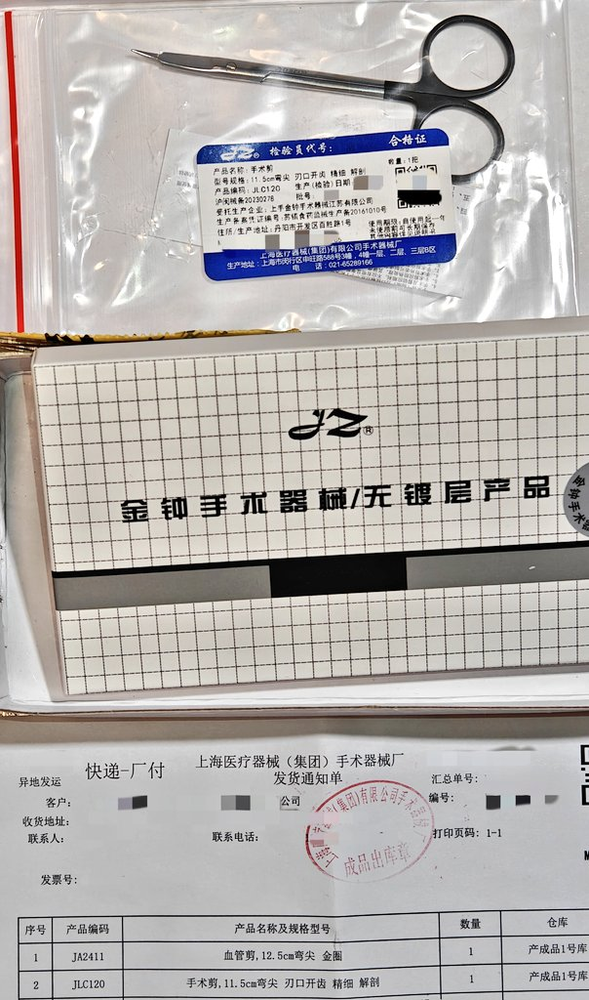

这家经销商能直接让厂家发货，所以金钟的基础手术器械根本不存在订不到货的问题，上次南昌骗子说订货拖了我40多天每次问不是忘记了就是再等等，就是逗我玩呢😡😡😡啊啊啊好生气死骗子怎么那么坏就知道欺负家猫🥺



死南昌骗子终于肯承认我要的没有货，还狡辩JLA100就是JLE080，一个是特快血管剪一个是特快手术剪，分明是两种东西好吧。乱发的这把在等快递来的时候随便试了试，发现还是个坏的，剪不了薄膜的剪刀归宿应该是垃圾桶，剪刀越锋利刀尖就更不会黏住薄膜。而剪纸不能判断是不是还能用，并且剪纸会磨损剪刀😡 https://t.co/rZJjLbZhae https://t.co/6NKBpJ67mS